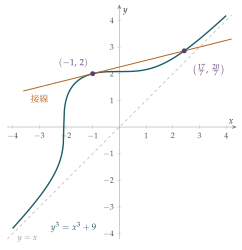

STEP I 2009、第2問
先に進む前に問題を読んでおこう。問題は STEP Support Programme の問題データベースにある： step.maths.org/questions/09-s1-q2
導入
一見すると、これはありふれた座標幾何の問題である。微分して接線（tangent）を求め、三次方程式（cubic equation）を解く。ところが最後の一行では、ある立方数（cube）をほかの三つの立方数の和として表すことが求められ、幾何がまるで魔法のようにそれを生み出してくれる。
曲線上の既知の点を通る直線を引いて新しい点を見つけるというこの技法は、3世紀のアレクサンドリアのディオファントス（Diophantus）にまでさかのぼる。現代の数学者の手によって、それは楕円曲線（elliptic curves）の理論となった。この理論は現代の数論（number theory）の中心に位置し、フェルマーの最終定理（Fermat’s Last Theorem）の証明の土台となり、さらに世界のインターネット通信の大部分の安全を支えている。
取りかかる前に
点 \((-a, b)\) はこの曲線上にある。なぜか。また、そのことは立方数の和とどう関係するのか。
代入すると \((-a)^3 + a^3 + b^3 = b^3\) となるので、確かに曲線上にある。\(y^3 = x^3 + a^3 + b^3\) 上の有理数（rational）座標をもつ点こそ、まさに求めたいものである。\(x = q/s'\)、\(y = p/s'\) ならば、分母を払うことで立方数どうしの関係式が得られる。方針は、見つけやすい一つの点から出発し、幾何を用いてもっと見つけにくい点を探すことである。
順を追って解く
段階 1 接線
\(y^3 = x^3 + a^3 + b^3\) を陰関数微分（implicit differentiation）すると \(3y^2 \dfrac{dy}{dx} = 3x^2\) であるから、\(\dfrac{dy}{dx} = \dfrac{x^2}{y^2}\) となる。\((-a, b)\) における傾き（gradient）は \(a^2/b^2\) であるから、接線は \[y - b = \frac{a^2}{b^2}(x + a) \quad\Longrightarrow\quad b^2 y - b^3 = a^2 x + a^3 \quad\Longrightarrow\quad b^2 y - a^2 x = a^3 + b^3. \qed\]
段階 2 接線が曲線と再び交わる点
\(a = 1\)、\(b = 2\) のとき、曲線は \(y^3 = x^3 + 9\) であり、\((-1, 2)\) における接線は \(4y - x = 9\)、すなわち \(y = \dfrac{x + 9}{4}\) である。これを曲線の式に代入すると \[\frac{(x+9)^3}{64} = x^3 + 9 \quad\Longrightarrow\quad x^3 + 27x^2 + 243x + 729 = 64x^3 + 576,\] となり、整理すると \(63x^3 - 27x^2 - 243x - 153 = 0\)、両辺を \(9\) で割ると \(7x^3 - 3x^2 - 27x - 17 = 0\) を得る。■
段階 3 三次方程式を解く
この三次方程式の根の一つは、計算をしなくてもすでにわかっている。それはどれか。また、なぜそれは二重に現れるはずなのか。
接線は \(x = -1\) で曲線に接しており（図 1.9.1）、「接する」とは重根（repeated root）をもつということである。これは、放物線の接線が放物線と二次方程式の重根で交わるのとまったく同じである。したがって \((x + 1)^2\) が因数になるはずである。確かめると、\(7(-1)^3 - 3(1) - 27(-1) - 17 = -7 - 3 + 27 - 17 = 0\) であり、導関数 \(21x^2 - 6x - 27\) も \(x = -1\) で \(0\) になる。割り算をすると \[7x^3 - 3x^2 - 27x - 17 = (x+1)^2 (7x - 17).\]
したがって、接線は \(x = \frac{17}{7}\) で再び曲線と交わる。\(y\) を求め、この点を立方数どうしの関係式に書き直せ。
\(y = \dfrac{17/7 + 9}{4} = \dfrac{80/7}{4} = \dfrac{20}{7}\) である。点 \(\bigl(\frac{17}{7}, \frac{20}{7}\bigr)\) は \(y^3 = x^3 + 9\) 上にあるから \[\frac{20^3}{7^3} = \frac{17^3}{7^3} + 9 \quad\Longrightarrow\quad 20^3 = 17^3 + 9 \times 7^3.\]
\(9 \times 7^3\) を二つの立方数の和として表したい。\(9\) がどこから来たのかを思い出そう。
\(9 = a^3 + b^3 = 1^3 + 2^3\) であるから、\(9 \times 7^3 = 7^3 + 14^3\) となる。したがって \[20^3 = 17^3 + 14^3 + 7^3.\] 検算：\(8000 = 4913 + 2744 + 343\)。■

振り返り
接することは重根を意味する。これにより、明らかな根が見当たらない三次方程式が、すぐに因数分解できるものに変わった。
新しい根は自動的に有理数になる。三つの根のうち二つが有理数であれば（ここではどちらも \(-1\)）、根の和 \(\frac{3}{7}\) が有理数であることから、三つ目の根も有理数でなければならない。これがこの方法の核心である。
幾何が数論の答えを生み出した。立方数を探し回ったわけではない。一本の接線がそれを見つけてくれたのである。
背後にある数学
\(y^3 = x^3 + 9\) や、より標準的な形 \(y^2 = x^3 + Ax + B\) のような三次曲線を考える。その上にある有理数座標の点を二つ知っていれば、それらを通る直線は曲線とちょうどもう一点で交わり、その点も有理数座標をもつ（振り返りでの議論による）。一点しか知らなければ、代わりにその点での接線を使えばよい。いずれにしても、既知の有理点から新しい有理点が生まれる。
驚くべきことに、この「弦（chord）と接線」による構成は、曲線上の点を足し合わせる方法に仕立てることができ、そのとき有理点全体は群（group）をなす。群とは、大学1年次で学ぶ代数的構造である。Louis Mordell は1922年に、この群が有限個の点で生成されることを証明した。すなわち、有理点がどれだけたくさんあっても、そのすべては有限個の点から弦と接線を用いて作り出せる。彼の証明は、第 1.5 節 で扱ったフェルマー（Fermat）の無限降下法（descent）の一種である。
今日の楕円曲線
このような曲線は楕円曲線とよばれる（楕円であるからではなく、楕円の弧長との歴史的なつながりによる）。楕円曲線は現代数学のいたるところに現れる。
フェルマーの最終定理。1980年代、Gerhard Frey は、\(x^n + y^n = z^n\) の解が存在すれば、非常に奇妙な楕円曲線が生じることに気づいた。1994年、アンドリュー・ワイルズ（Andrew Wiles）はそのような奇妙な曲線が存在しえないことを証明し、こうしてフェルマーの最終定理を証明した。
バーチ・スウィンナートン＝ダイアー予想（Birch and Swinnerton-Dyer conjecture）。有理点のなす群には、生成元（generator）がいくつ必要なのだろうか。1960年代に、ケンブリッジで行われた数学における最初期のコンピュータ実験をもとに立てられた予想は、素数を法として点を数えることから作られる関数を用いて、その答えを予言している。これは七つのミレニアム懸賞問題（Millennium Prize Problems）の一つである。
暗号（cryptography）。有限の数の体系の上の楕円曲線では、点 \(P\) を自分自身に \(n\) 回足す計算は、\(n\) が何百桁もあっても速く行える（高い累乗を二乗の繰り返しで計算するのと同じように、\(P\) を繰り返し2倍すればよい）。ところが、\(P\) と結果 \(nP\) が与えられたとき、\(n\) を求めることはきわめて難しいと考えられている。これが楕円曲線離散対数問題（elliptic-curve discrete logarithm problem）である。この非対称性が、今日のオンライン通信の多くを守っている。
同じ次数の累乗の和
三つの正の立方数の和となる最小の立方数は \(6^3 = 3^3 + 4^3 + 5^3\) である。接線の方法で見つかった \(20^3 = 7^3 + 14^3 + 17^3\) はその倍数ではなく、この方法を繰り返すと新しい恒等式が次々に得られる（ただし負の数を含むものもある）。ある \(k\) 乗数を作るには、\(k\) 乗数がいくつ必要だろうか。オイラー（Euler）は1769年に、ある \(k\) 乗数を作るには少なくとも \(k\) 個の \(k\) 乗数が必要であると予想した。4乗と5乗については、この予想は誤りであった。1966年、Leon Lander と Thomas Parkin はコンピュータによる探索で \[27^5 + 84^5 + 110^5 + 133^5 = 144^5\] を発見し、1988年には Noam Elkies が楕円曲線を用いて4乗の場合の反例を見つけた。
思考のスキル
方程式の整数解や有理数解を求めるには、方程式を曲線とみなし、既知の点を通る直線を探せ。
その背後にある代数は単純である。有理数係数の多項式の根が一つを除いてすべて有理数であれば、残りの根も有理数である。このように図と式の間を行き来することは、数学者がもちうる最も強力な習慣の一つである。
次の一歩
円上の有理点。\((-1, 0)\) を通り傾きが \(t\) の直線は、円 \(x^2 + y^2 = 1\) ともう一点で交わる。その点が \(\left(\dfrac{1 - t^2}{1 + t^2}, \dfrac{2t}{1 + t^2}\right)\) であることを示し、これを用いてピタゴラス数（Pythagorean triples）を無数に作れ。
交わらない弦。点 \((1, 2)\) と \((2, 1)\) は \(x^3 + y^3 = 9\) 上にある。これらを通る直線は、曲線とほかの点では交わらないことを示せ。「三つ目の点」はどこへ行ったのだろうか。（無限遠点（point at infinity）について調べてみよ。）
技法を繰り返す。\(\bigl(\frac{17}{7}, \frac{20}{7}\bigr)\) における \(y^3 = x^3 + 9\) の接線と、それが曲線と交わる三つ目の点を求めよ。（数式処理システム（computer algebra system）を使うとよい。数がいかに急速に大きくなるかに注目せよ。）
タクシー数（taxicab numbers）。\(1729 = 1^3 + 12^3 = 9^3 + 10^3\) である。\((1, 12)\) と \((9, 10)\) を通る直線が曲線 \(x^3 + y^3 = 1729\) と交わる三つ目の点を求め、\(p^3 = q^3 + r^3 + s^3\) の形の新しい恒等式を導け。
さらに学ぶために
Joseph Silverman & John Tate, Rational Points on Elliptic Curves（Springer）。邦題『楕円曲線論入門』。学部生向けに書かれており、第 1章は Aレベル（A level、英国の大学入学資格試験）を超える知識を必要としない。
Avner Ash & Robert Gross, Elliptic Tales（Princeton University Press）。バーチ・スウィンナートン＝ダイアー予想へと至る一般向けの解説書。
Simon Singh, Fermat’s Last Theorem。邦題『フェルマーの最終定理』。楕円曲線が350年来の難問を解決するに至った経緯を描く。